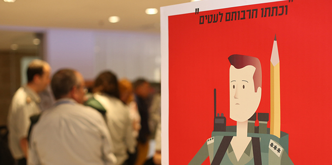

On Wednesday June 14, 2017, the Mandel Leadership Institute held a colloquium for the Mandel IDF Educational Leadership Program. Over 150 people participated, from all eleven of the cohorts that have completed the program so far.
The day began with an exhibition of project posters by Cohort 11. This was followed by a panel on Satirical, Economic, and Haredi Perspectives on the IDF, and workshops on various aspects of educational leadership. During the event, each cohort had its own gathering and then we reconvened for a panel with Ms. Michal Cohen, Former Director-General of the Ministry of Education and Prof. Yuval Elbashan from Ono Academic College on "Small Successes and Large Failures to bring about Social Change," based on their experiences over the past decade. The day ended with a musical performance and conversation on the role of leadership in shaping Israeli culture.
The outgoing Chief Education Officer, Brig. Gen. Avner Paz Tzuk, and the incoming Chief Education Officer, Brig. Gen. Zvikah Fayirizen, both honored the event by participating as did Mandel Foundation Vice-Chair, Stephen Hoffman, Mandel Foundation President Prof. Jehuda Reinharz, Mandel Foundation-Israel Director General, Moshe Vigdor, and Mandel Leadership Institute Director, Dr. Eli Gottlieb.
During the greetings session, Mr. Hoffman addressed the participants on behalf of the Mandel Foundation; Dr. Motti Shalem, former director of the program, spoke about Prof. Mordecai Nisan, of blessed memory, and of the vision that he and Mr. Mandel had for the program; and Dr. Chava Shane, current director, spoke of efforts to ensure the fellows a significant learning experience at MLI.
Hearing about the graduates work and achievements in the IDF and in civilian roles, and seeing in their eyes the deep appreciation for what they received at MLI as fellows, provided a glimpse of the profound extent to which the founders' vision for the program is being realized.

{kind=link}